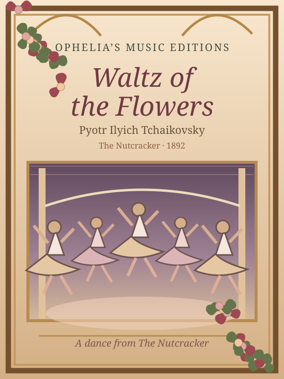

OPHELIA’S MUSIC EDITIONS · SELECTION XVI
Waltz of the Flowers
Pyotr Ilyich Tchaikovsky (1840–1893) · The Nutcracker · Op. 71a
Illustrated musical edition

Listen
United States Army Band · 2019 · 6 min 39 sec. Recording: Public domain · U.S. Army recording; original recording and attribution. This recording is presented without alteration.
Free sheet music
A complete early twentieth-century piano edition (1909) of the Waltz of the Flowers from The Nutcracker Suite, marked public domain in the United States.
If the preview fails, use a PDF link above. Google PDF viewing depends on the source server. Score source and public-domain information ↗. This historical piano arrangement differs in instrumentation from the recorded concert-band performance.